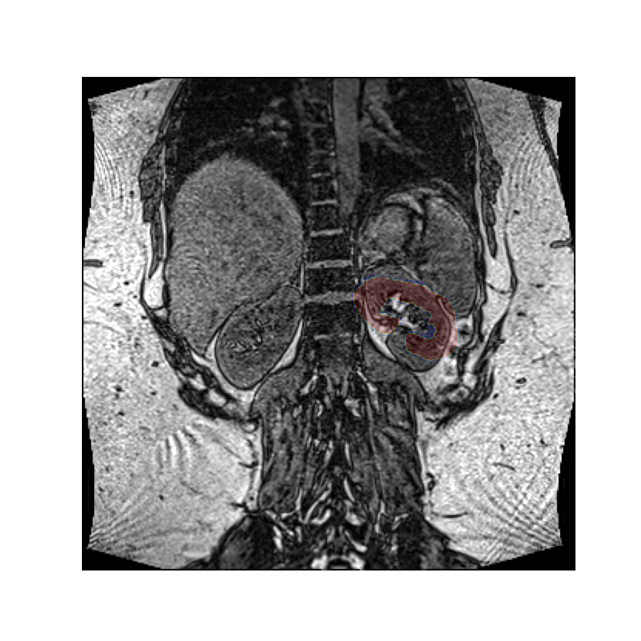
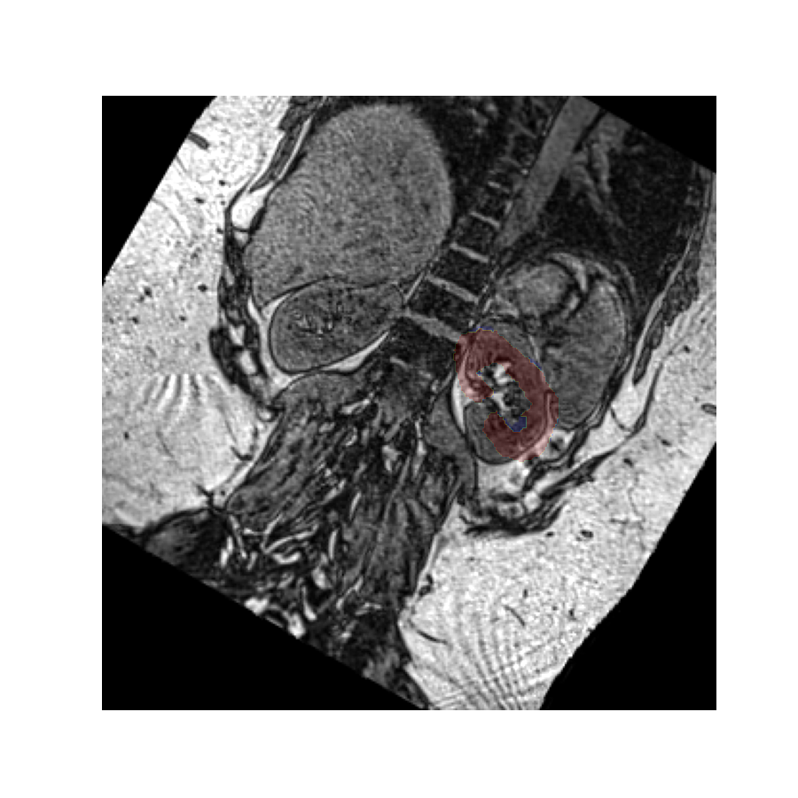
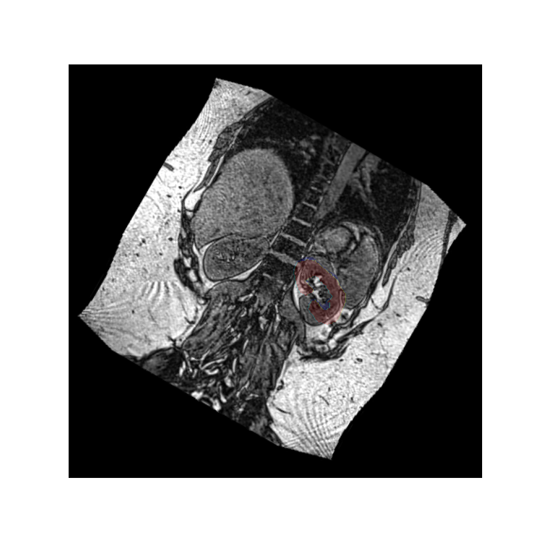

Note
Go to the end to download the full example code.
In-slice rotations#
This example illustrates some of the basic ideas underlying affine transformations using in-slice rotations.
Setup#
import numpy as np
import vreg
import vreg.plot as plt
Get data#
For this illustration we are using coronal images and masks. The mask is static throughout and used as a reference to show the effect of the rotations:
# Coronal images
img = vreg.fetch('Dixon_out_phase')
# Take out one slice (z=100) for clarity
img = img.extract_slice(100)
# Left kidney mask
mask = vreg.fetch('left_kidney')
Display data#
Without rotations, the mask aligns with the image:
plt.overlay_2d(img, mask)
A rotation#
Let’s rotate the image over an angle of 30 degrees, clockwise, around an axis perpendicular to the slice. This idea is easiest to express when we use a coordinate system defined by the image’s axes.
Direction of rotation#
Note that while it appears we have rotated the mask counter clockwise, we have in fact rotated the image clockwise. However, since we use the image as visual reference here, it appears static.
A positive angle has created a clockwise rotation here because the volume’s reference frame has an x-axis pointing along the rows from left to right, and the y-axis is pointing along the columns from top to bottom. Using the right-hand rule the z-axis therefore points into the screen.
Placing the thumb of the right hand along the z-axis, the fingers curl in the clockwise direction, which is the direction corresponding to positive angles.
Center of rotation#
Since we have not specified a rotation center, the rotation was performed around the origin of the volume’s reference frame, which is the top left-hand corner in this image. If we want a different rotation center, we can specify that in the call to the rotation function.
Let’s perform this rotation again, but now rotating around the center of mass of the left kidney. Since the rotation vector is expressed in the coordinate system of the image, we must do the same for the rotation center.
Rotating values#
The rotated image looks exactly the same as the original image because
by default vreg does not modify the values. Instead it rotates the affine
matrix which specifies where the values exist in space.
However, it is possible to rotate the values instead by setting the values flag to True.
Reshaping#
Since the values have been rotated and the affine has stayed the same, the image now appears rotated with a static mask, but some of the values have have been lost because the shape of the value array stays the same by default.
We can fix this by setting the reshape flag to True, which will increase the field of view to preserve all image values.
Affine versus values#
As the image shows, the reshaping option has now preserved all values by enlarging the value array, but the problem remains that many pixels have had to be zero-filled in order to create a rectangular value array.
This example illustrates why rotating the affine instead of the values is generally preferred. It does not come with a need to interpolate or modify the values, or fill parts of the image with values that do not properly describe the object.
Rotating the affine retains the values exactly as they are, and just assigns them a different location in space.
Active versus passive rotations#
The examples above all performed active rotations: they physically rotated the image away from it’s original position, creating a misalignment with the original kidney mask.
An alternative way of looking at a rotation is to reslice the image at a rotated angle, without actually changing it’s position in space. This is a passive rotation. The effect on the values is the same as an active rotation in the opposite sense, but since it does not change where the values are, it merely provides and alternative picture of the same volume.
Let’s perform the above rotation again, but now passively using it only to reslice the values. We use the oppositive sign of the rotation vector to get a comparable result as before:
The rotated image looks exactly the same as in the previous example, but in this case the kidney mask is still in the same place. This is because the volume has not actually been rotated in space - it has merely been resliced at an angle so we see it in a different plane.
Total running time of the script: (0 minutes 0.954 seconds)